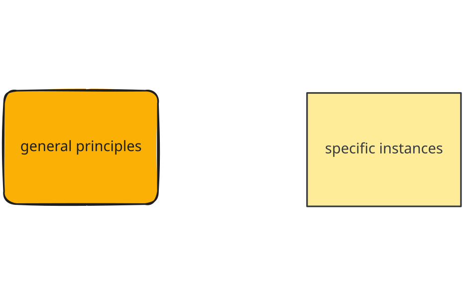
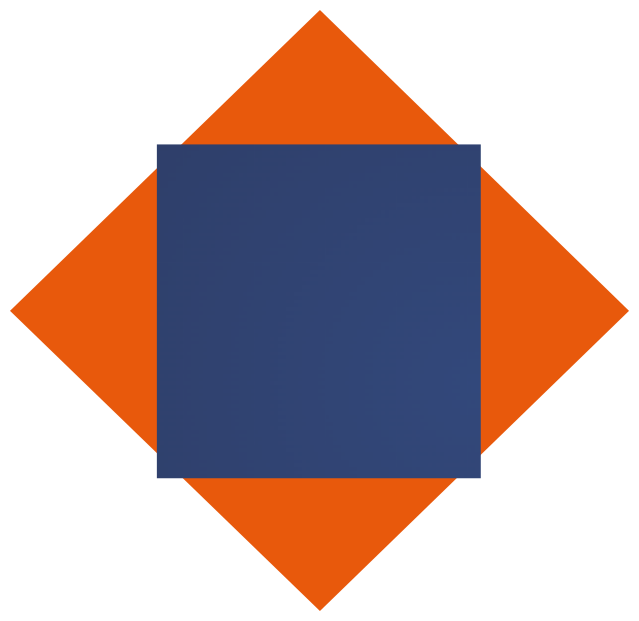

How do kids learn to talk?
Lin 211 • Section 3, Part 2
Kevin B McGowan ![]()
2026-10-14
Read today: Nine Ideas
Ling Link
- what were your/a family member’s first words?
- are there any words you and your family say uniquely because of how a child said them? (e.g. pasketti 🍝)
- please discuss amongst yourselves for 3 minutes and post on this MS form:
- https://forms.cloud.microsoft/r/UJLZzAbVGh
Observation 1:
It is possible to learn a new language.
⤹ ( but it’s so hard, we hire AI owls to pester us)
It is possible to learn a new language, but…
- For an adult, it requires a lot of effort and resources
- takes a long time
- the person will almost certainly always have a foreign accent in the language
- the language itself is only a portion of what has to be learned; cultural norms and expectations, idioms, pragmatic meanings, rules of politeness, etc. all have to be learned to.
Observation 2:
Literal babies do this faster & better.
Babies learn to speak their language(s):
- apparently effortlessly
- quickly
- with nearly full native fluency by the time they’re 6
- all while learning to do literally everything else a person has to know how to do!
How do kids learn to talk?
Acquiring a First Language
| Even very young children | |
|---|---|
| make & hear their language’s sounds | |
| say many words | |
| make simple statements |
| By the age of six! | |
|---|---|
| master >= 90% of adult-like speech sounds | |
| master 80% of adult grammatical structures |
Some Terminology
- Language acquisition is the process by which humans acquire the ability to use, produce, and perceive language!
- Involves the acquisition of all functional aspects of the system, including phonetics, phonology, morphology, lexicon, syntax, and pragmatics
- First Language Acquisition: how an infant acquires his/her first or primary language
- Second Language Acquisition: how children and adults acquire additional languages beyond the first
Hypothesis #1: Purely Inductive

Induction
- Induction is probabilistic
- There are always many logical possibilities to generalize
- Children hear specific instances of sounds, morphemes, words, structures, from which they must derive the general principles of their language
- Remember how hard it was to know where the words were when hearing a sentence? How could a baby learn to find the words before they know any words?!?

Induction (biases make things easier)
- Induction in word learning
- Humans have an inherent bias regarding meaning
- We assume Gavagai means rabbit but it could mean “cute”, “ears”, “white”, “mammal”
- Infinite possibilities, but whole object bias suggests it will be the whole thing, not its parts

- But it’s not a simple case of imitation!
- “I goed to bed.”
- “Me eat apples.”
- “I brush my tooths.”
- the Wug™ Test
Hypothesis #2: Purely Deductive
- The Innateness Hypothesis
- Language ability in humans is innate , or inborn
- Humans are genetically predisposed to learn/use language
- Babies are born with the knowledge that languages have patterns and with the ability to seek out those patterns
- Requires reinforcement, but no one “teaches” you how to talk
- Children learn language as they live in it
- But acquiring language is more than memorizing words and phrases
- Grammatical and communicative competence
Turns out we need induction and deduction (innateness) to explain & understand language acquisition
If it’s built in, why aren’t we born talking?!
- Physical maturation: speech is hard to do!!!
- Babies can use individual sign language words months before they can coordinate speech gestures
- Symbolization
- Language = symbolic = arbitrary representation of the world (we do this very early)
- To acquire language, a child must be able to keep a mental model of other peoples’ minds, ideas, expectations, beliefs (this takes longer)
Theory of Mind
- theory of mind (ToM) emerges between 3 to 5 years of age
- A child can’t even try to lie until it has ToM
- The ability to lie and the ability to understand how someone else are feeling derive from the same innate, human capacity for social understanding
- Everyday activities like reading books, role play games, and family conversations about mental states (thoughts, feelings) measurably accelerate development
Adults help (even without knowing it)
how do adults interact with babies to facilitate the language acquisition process?

Parentese (aka Motherese)
- Parentese is a register that adults use to talk to younger children
- Exageratted prosody
- Simplified sentences
- We used to think that not all cultures use Parentese
- Newer research suggests Parentese just looks very different from culture to culture
- But children learn language at same rate!!
Some Characteristics of Baby Talk
- There are several stages of language acquisition that we will explore:
- Babbling
- One-Word Stage
- Two-Word Stage
Stages of Language Acquisition
Babbling
- Before about 10 months, interested in any speech sounds from any language
- Older than 10 months, start to only attend to sounds from the language their caregivers speak
- Less common sounds emerge later, 12 - 14 months
One-Word Stage: 12 months
Research suggests that children are doing more than just rehearsing single words
- Children use single words to express whole propositions
- A child may say “Dada” to mean different things in different contexts
“Dada”
- Here comes Daddy!
- This is for Daddy.
- That is where Daddy sits.
- This shoe is Daddy’s.
Two-Word Stage: Typically 1 ½ years
- The child has about 50 words in their vocabulary
- Utterances typically contain one noun-like subject element and one predicate-like element
- Something like “John apple” is like…
- John ate an apple
- subject predicate
Beyond two words?

Beyond two words?
- Here is a real parent-child (2;8) interaction:
- Child: I beed a princess.
- Mommy: You are the princess?
- Child: No, I beed a princess.
- What happened?
- Sounds Mommy heard: [ajbidəprɪncɛs]
- Mommy’s interpretation = “I be (am) the princess”
- Mommy questions child about utterance
- Child’s actual meaning = “I beed (was) a princess”
- Child has overgeneralized regular past tense
- Sounds Mommy heard: [ajbidəprɪncɛs]
What’s next?
- Monday: “How does bilingualism work?”
- Keep working on Observation Notes #4
- Quiz 7 on Friday!
Language in the World